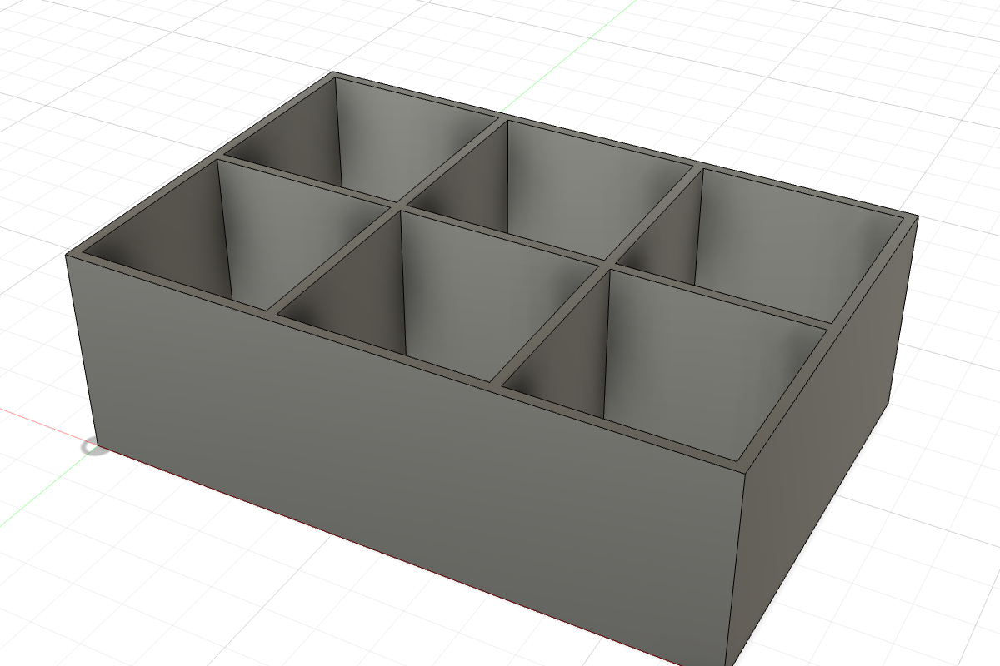
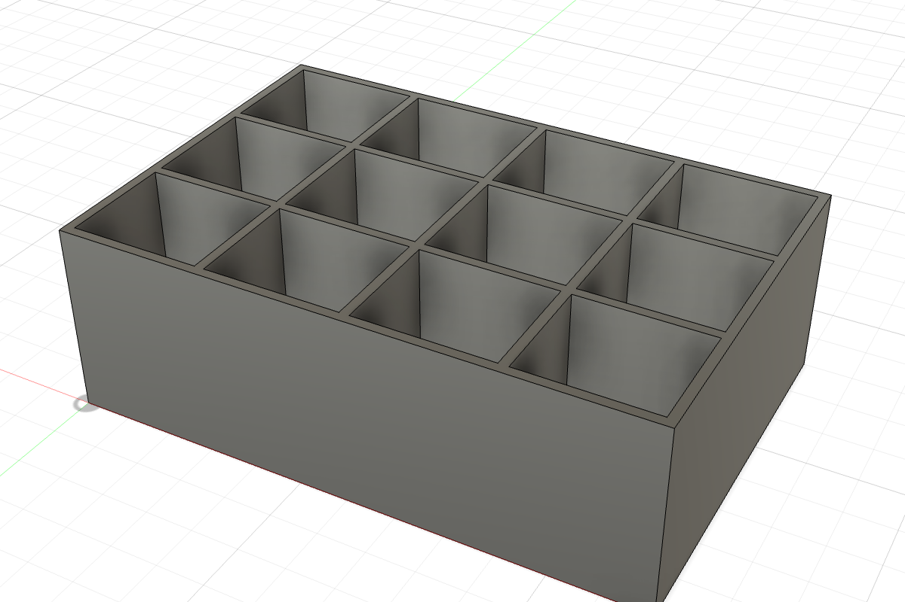
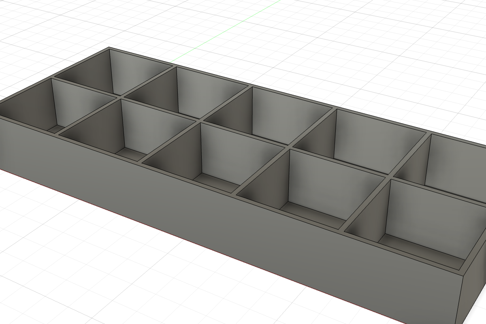
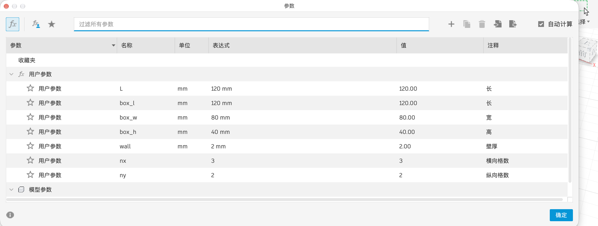

6.5 实战：可调收纳盒
用这一章的方法做一个完全参数化的桌面收纳盒：长、宽、高、壁厚、格子数都是参数，改数字就能得到不同规格。
目标#



三张图是同一个设计，只改了参数窗口里的数字。
第 1 步：参数#

| 名称 | 表达式 | 含义 |
|---|---|---|
box_l | 120 mm | 长 |
box_w | 80 mm | 宽 |
box_h | 40 mm | 高 |
wall | 2 mm | 壁厚 |
nx | 3（无单位） | 长度方向分几格 |
ny | 2（无单位） | 宽度方向分几格 |
第 2 步：外形和抽壳#
- XY 平面画矩形，一个角和原点重合，长、宽分别标
box_l、box_w。 - 拉伸
box_h。 - 抽壳：选顶面，内侧厚度
wall。
第 3 步：一块横向隔板#
- 「构造 → 偏移平面」：从 YZ 平面偏移
box_l / nx，这是第一块隔板的位置。 - 在这个平面上「创建草图」。草图里会自动出现一个小点，那是原点“投影”到这个平面上的位置，不用自己投影（看不到的话，在草图选项板里确认勾选了「点」）。
- 「两点矩形」：第一点点在这个原点投影上（鼠标靠近会吸附，自动加“重合”），第二点往盒子里面拉。宽度标
box_w，高度标box_h。这两个尺寸一定要用参数，否则盒子改大改小时隔板不跟着变（6.3）。 - 拉伸：方向「对称」，距离
wall，操作「合并」。
第 4 步：阵列出其余隔板#
- 选中隔板的拉伸特征，「矩形阵列」，方向选 X 轴。
- 数量填
nx - 1，间距填box_l / nx。
第 5 步：纵向隔板#
同样的方法：从 XZ 平面偏移 box_w / ny 建平面，画矩形（长 box_l、高 box_h），对称拉伸 wall，沿 Y 轴阵列 ny - 1 个，间距 box_w / ny。
第 6 步：试一试#
打开参数窗口，改 nx、ny、box_l、box_h，看模型能不能正确更新。都没问题，就是一个真正参数化的模型。